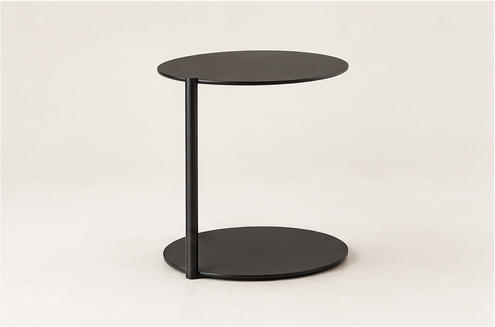
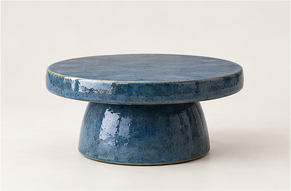
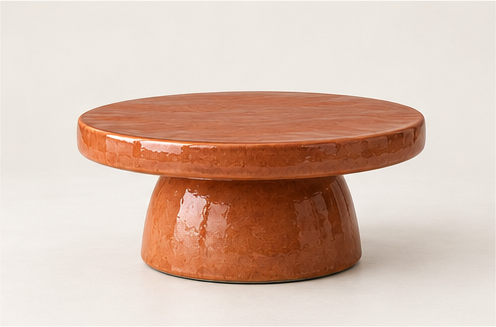
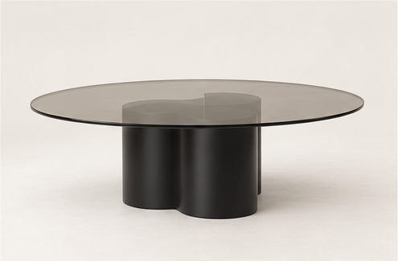
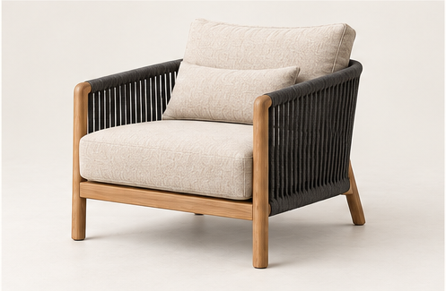
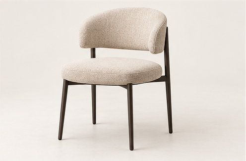
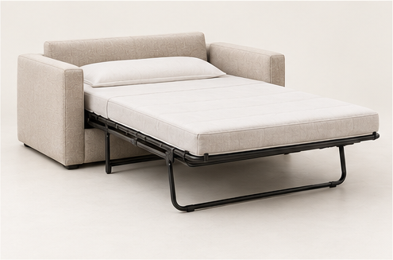
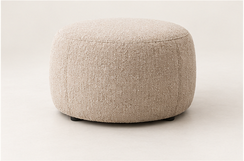
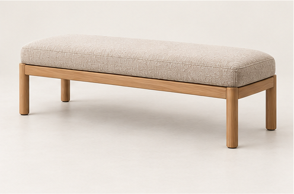

Bedside & side tables
Compact black side tables and bedside pieces for guest rooms.
Guestroom and suite furniture for rest, work and storage.

Compact black side tables and bedside pieces for guest rooms.

Round low tables with glazed ceramic or teak details.

Sculptural glazed ceramic tables in multiple colours and sizes.

Coffee and side tables with smoked glass tops and metal bases.

Lounge armchairs with rope details, timber legs and removable cushions.

Dining chairs with upholstered seats and refined metal finishes.

Sofa-bed formats for guest rooms, including a 140 × 200 cm sleeping size in the quoted range.

Upholstered occasional seating for bedrooms and lounge areas.

Timber benches with cushions for guest rooms and shared spaces.